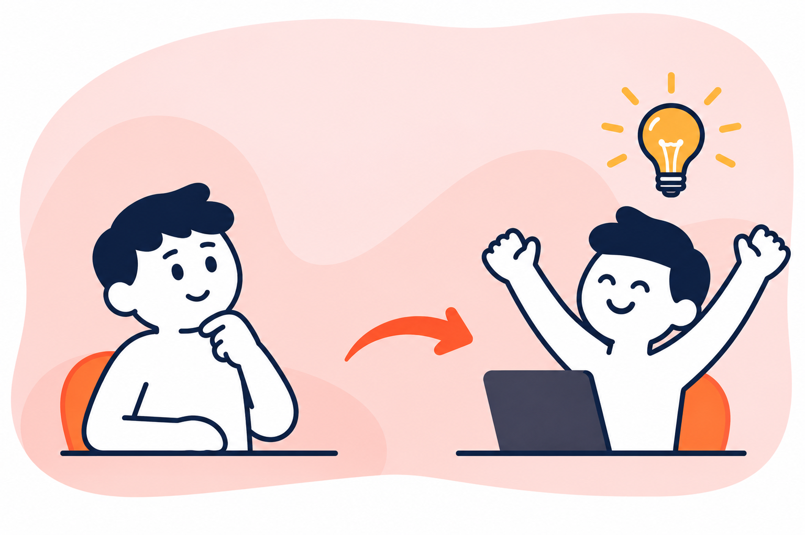
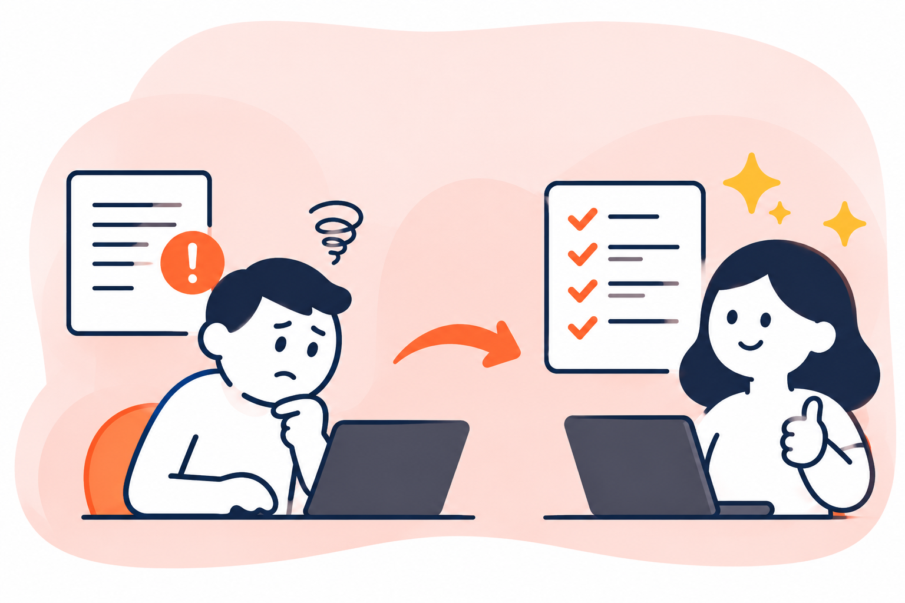
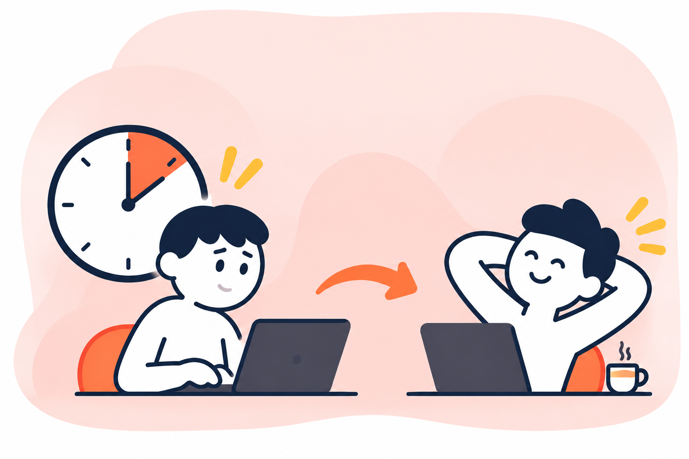
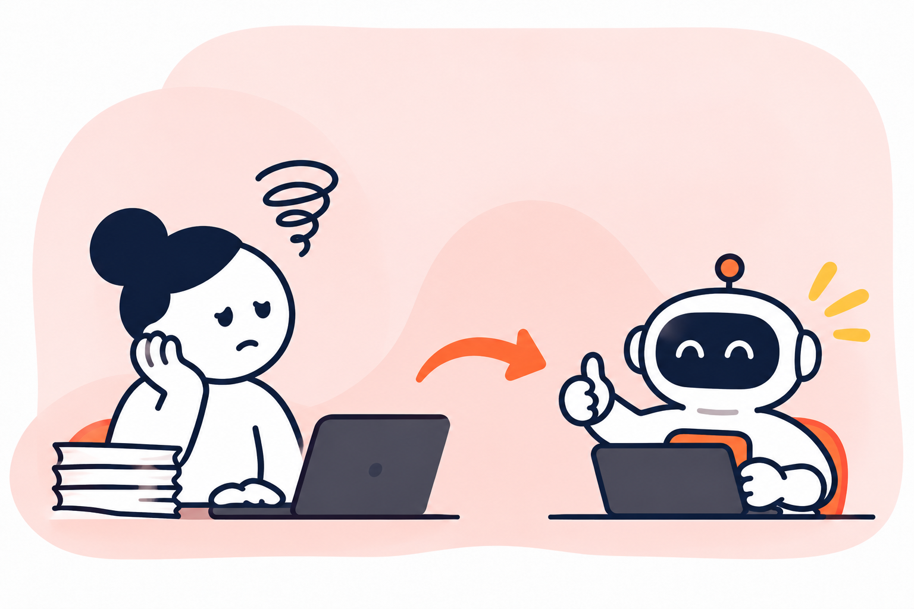

Trop d'informations
Vous entendez parler de dizaines d'outils, sans savoir lesquels sont vraiment utiles à votre activité.
Moins de contraintes, plus d'idées et davantage de temps pour l'essentiel. Donnez à vos équipes les bons réflexes pour faire de l'IA générative une alliée au quotidien.

En quelques minutes, découvrez notre vision : rendre l'intelligence artificielle utile, compréhensible et directement applicable dans la vie des équipes.
Un aperçu de notre approche, avant de passer à la pratique.
Entre les nouveaux outils, les conseils contradictoires et le manque de temps, il n'est pas toujours facile de passer de la curiosité à l'usage.
Vous entendez parler de dizaines d'outils, sans savoir lesquels sont vraiment utiles à votre activité.
Le quotidien est déjà chargé : difficile de prendre du recul et d'expérimenter de nouvelles méthodes.
Vous avez testé l'IA, mais vous ne savez pas toujours comment obtenir des résultats fiables et pertinents.
Confidentialité, vérification, qualité : vous voulez adopter les bons réflexes dès le départ.
Pas besoin d'être spécialiste pour commencer. L'IA peut déjà vous aider sur des situations que vous rencontrez chaque jour.
Faites émerger des idées, explorez des pistes et prenez du recul pour imaginer autrement.

Structurez vos écrits, clarifiez vos messages et obtenez une première base de travail plus aboutie.

Accélérez les recherches, les synthèses et les tâches qui mobilisent inutilement votre énergie.

Repérez les tâches récurrentes et découvrez comment simplifier certaines étapes de vos processus.
Chez Clippy Coach, nous partons du quotidien des équipes. Chaque notion est reliée à un usage professionnel et chaque participant expérimente par lui-même.
Clippy Coach accompagne les collectifs qui souhaitent intégrer l'IA générative dans leurs pratiques professionnelles, quel que soit leur niveau de départ.
Découvrir la formation en détail →Un parcours modulaire, en présentiel ou à distance, pour avancer selon vos besoins et vos disponibilités.
Découvrir les possibilités et les limites de l'IA générative.
Tester des outils et apprendre à formuler les bonnes demandes.
Transposer les acquis à ses missions et ses situations de travail.